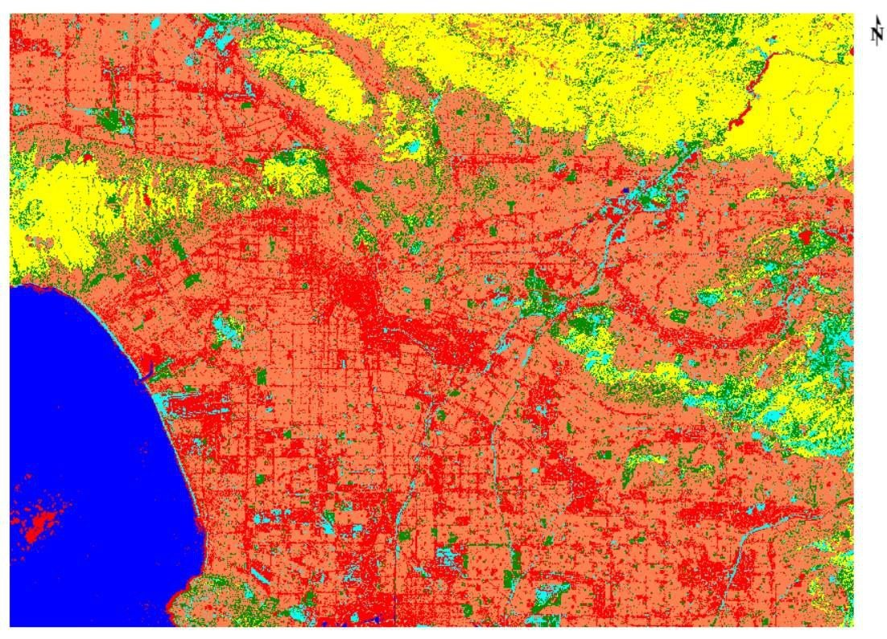
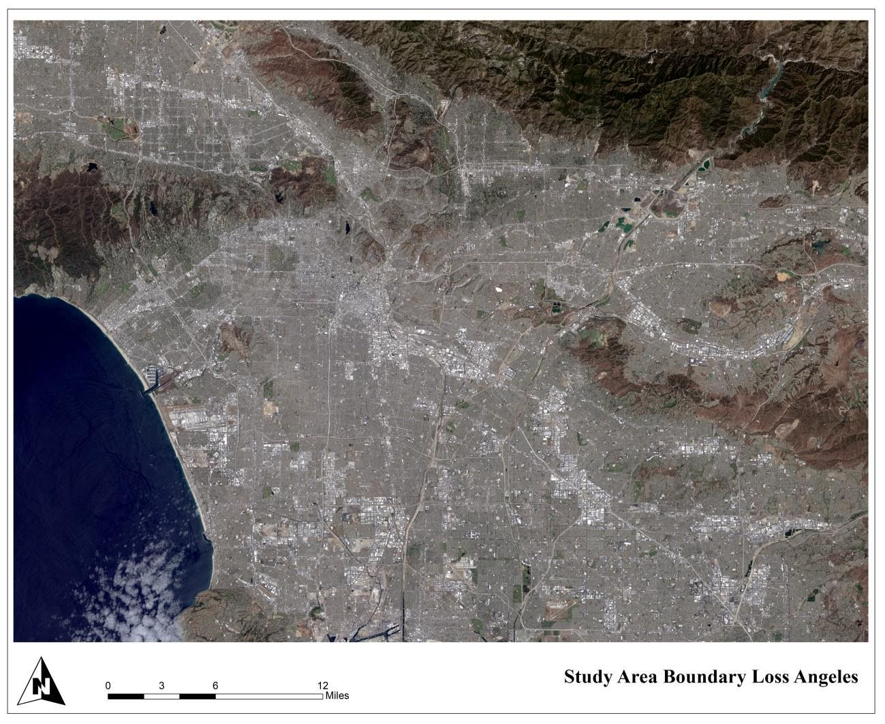

Remote Sensing & Earth Observation
Fig. 1 Maximum Likelihood land-cover classification of Los Angeles (six classes) Fig. 2 Maximum Likelihood land-cover classification for a second year, used for change comparison Fig. 3 Study area: Los Angeles metropolitan region on Landsat 8
Urban Land-Cover Classification of Los Angeles
Classified urban land cover across the Los Angeles metropolitan area for 2019, 2022 and 2024 with Maximum Likelihood Classification of Landsat 8 imagery, to measure urban densification and changes in green space.
- Location
- Los Angeles, USA
- Year
- 2024
- Client
- Practice study
- Tools
- Landsat 8 OLI, ENVI, Maximum Likelihood, Correlation analysis




Challenge
Measure how Los Angeles land cover changed between 2019 and 2024: where the city densified, and what happened to vegetation, water and bare soil.
Approach
- Radiometric calibration, atmospheric correction and subsetting to the metropolitan area
- Selected ROIs for the six classes and checked their spectral signatures
- Ran a Pearson correlation analysis between bands and excluded bands correlated above 0.85; bands 5, 1 and 7 were the least correlated
- Classified each year with Maximum Likelihood and assessed accuracy with confusion matrices and Kappa
- Compared class areas across the three years
Results
- High-density urban grew from 76.71 km² (2019) to 78.56 km² (2024) while low-density urban fell from 195.75 to 186.51 km², a sign of densification
- Bare soil declined from 22.00 to 18.37 km² as development reached undeveloped land
- Irrigated lawns rose from 38.16 to 41.71 km²; natural vegetation dipped to 57.39 km² in 2022 and recovered to 63.15 km² in 2024
- Water rose from 35.83 km² (2019) to 42.92 km² (2022), then 41.50 km² (2024)
Practice study: course and client details omitted.